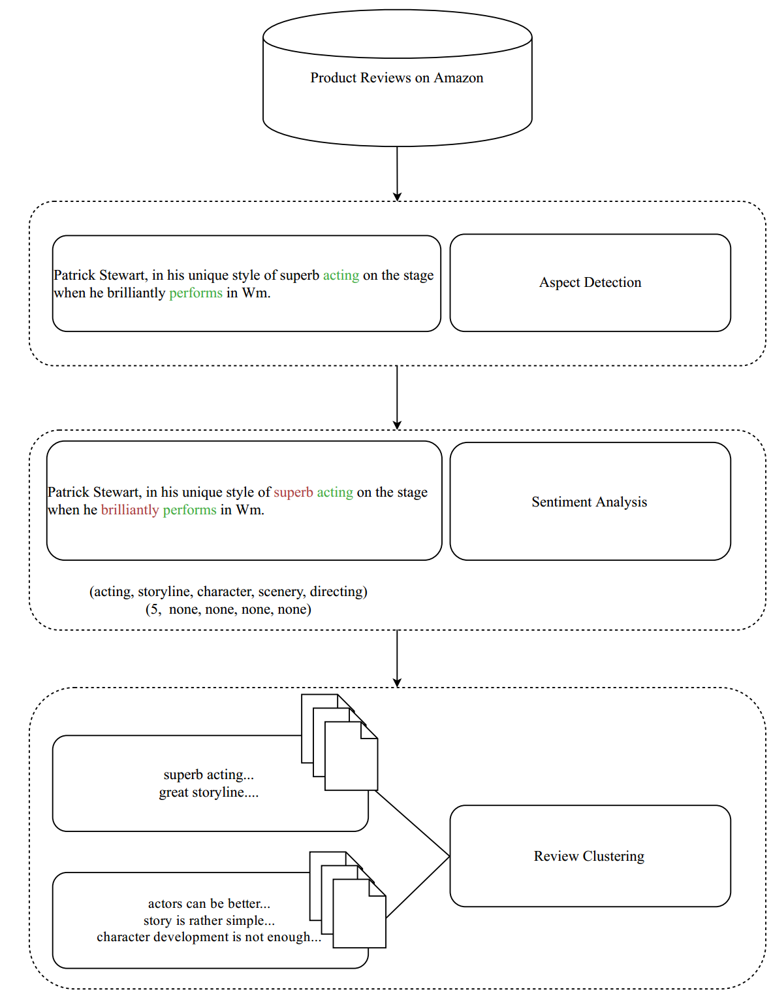

M.Ye-1@student.tudelft.nlc.lofi@tudelft.nln.tintarev@tudelft.nlKeywords
opinion mining, aspect-based sentiment analysis, opinion clusteringThis paper evaluates whether semantic grouping of reviews helps users make better decisions. Reviews rated as helpful were com- pared with semantically grouped reviews. While participants did not perceive a reduced effort (using NASA-TLX), they needed less time and performed better on answering questions about the strong, weak and controversial points of the movies.
Choosing the right product in e-commerce platforms from many competing options has become a challenge for many users. The absence of (for users) meaningful metadata for candidate items makes it difficult to decide if buying the item will be a positive experience. With several thousand reviews available for popular products, it is hard for users to find representative reviews. This situation is especially challenging when there is no clear consensus between reviewers. Previous approaches to this problem include faceted explanations to support users in understanding recommendations [9], and generating summaries of reviews [5].
This paper takes a slightly different approach by grouping re- views in terms of the aspects they address. Unlike previous approaches it does not summarize information, rather it structures it semantically. For example, in the movie domain, this could entail a group of reviews which express that "the acting and special effects are superb, but the storyline is very disappointing finally resulting in a mediocre movie" as opposed to a group of reviews which perceived the movie as "having a compelling storyline, and great acting, for an overall great experience".
Further, our unique contribution is to evaluate whether semantic grouping of reviews can decrease the effort of users and help them evaluate candidate movies better. To this end, we briefly introduce our design of a prototype technique for semantically analyzing and grouping online product user reviews based on automatically discovered aspects. Then, we present a user study comparing our semantically-enriched technique with the 10 reviews rated as most helpful. The findings suggest that while the difference in effort is not perceived by users, our approach results in better performance on a memorability task.
In the following, we outline the design decisions for our prototype system. As the focus of this paper is on evaluating the perceived benefit of semantic viewpoint-based grouping from a user’s perspective, we only give a brief overview of the system implementation, as it mostly follows established best-practices (although we did not incorporate techniques for irony detection). Our system is divided into three parts: aspect detection, aspect-based opinion extraction, and viewpoint grouping, as summarized in Figure 1. In the aspect detection phase, the system decides which aspects should be used to describe a given product class. For instance, aspects like acting
or directing
can be used to describe movies. Instead of manually defining aspects [10], our system automatically discovers aspects based on statistical differences in word frequencies between corporas of different domains. In short, we compare word frequencies in our movie review corpora with a large common language corpus, and treat terms appearing significantly more frequent in movie reviews as candidate terms discussing an aspect. After grouping those terms with respect to their WordNet similarity [11], we obtain the final aspects with their associated terms. In our experiments, we used five automatically detected aspects: acting, directing, scenery, characters, and storyline.
In the opinion extraction phase, the system detects the writer’s attitude towards the aspects by analyzing the words she uses, resulting in a numeric score for each aspect ranging from 1 (perceived as negative
) to 5 (perceived as positive
). In brief, this is realized by aggregating the sentiment scores (from SentiWordnet [1]) of those terms which can be associated to one of the aspects based on analyzing the sentence structure. These aggregated aspect scores are then combined into a viewpoint vector [4], containing the opinion scores for each aspect for which the review expressed an opinion. Finally, the system clusters reviews which share similar view- points together based on the similarity of the viewpoint vectors [6].

To evaluate the usefulness of semantic viewpoint-based review grouping for supporting user decisions we conducted a questionnaire. Participants are asked to use both reviews organized and summarized by our system, as well as reviews rated helpful on Amazon, to complete a set of content-related tasks focusing on decision support: if our system can help users to grasp the nature of products faster, and thus be more efficient and spend less effort.
Participants. 20 MSc and PhD students took part in the study. According to [2], students are a representative group for such studies as they are among the most loyal and experienced customers of shopping websites who care greatly about reviews.
Materials. Our system uses a dataset of movie product reviews including ratings, text and helpfulness votes from Amazon.com [7]. There are in total 1,697,533 reviews for 50,052 movies in the dataset. Although we currently focus on movies, the system is generalizable to different products as well as there are no domain-specific optimizations performed.
We selected two movies for this experiment, using the following criteria. We considered movies with at least 100 reviews, focusing on those with controversial viewpoints, i.e., with a balanced ratio of very positive reviews versus very negative reviews. Among the considered movies, we chose Johnny Mnemonic and Seven Years in Tibet. We only included participants who have not watched the selected movies before, so that they need to rely on the reviews to form an opinion. The reviews for those movies as well as the resulting printed hand-outs used for the experiments can be found on the companion page [8] and the Section 6.
Procedure. The user study is conducted in a lab setting, one participant at a time. To minimize the impact of user interface design issues (like being familiar with the current style of presenting reviews as used by Amazon, versus being unfamiliar with our system’s style of presenting information), we provided the reviews to the participants printed on paper.
In a within-subject design, we asked participants to read 10 re- views for both a) the top-10-most helpful reviews as customer might encounter them on the live Amazon.com page, or b) reviews clustered using our technique into the two main viewpoints, showing the top-5 most useful reviews for each cluster alongside the respective centroid viewpoint vector. We balanced the order of movies, and type of review presentation to reduce learning effects.
The complete questionnaires handed to the participants can be found on our companion page [8] to this paper; an abridged version is in the appendix of this document.
Dependent Variables. Memorability: Number of points for each movie, participants were asked to answer content-related questions: naming 3 strong, weak or controversial points. We did not allow users to access the reviews again during answering those questions, thus we can indirectly measure whether different setups affect the memorability or understanding of the reviews. However, the correctness of the given answers is not checked as they are highly affected by personal bias, e.g., violent movies may be attractive to some people but not to others.
Memorability: Duration. We measured how long it took to answer the questions.
Perceived Effort. We also ask the participants about their subjective opinion about the perceived difficulty of the given tasks and their satisfaction of with their own performance using the NASA-TLX [3] indexes.
Completion time. Furthermore, we collect time needed for completion.
Hypotheses. Before the study, we fixed our expected outcomes, assuming that participants who are faced with reviews semantically clustered by viewpoint can answer our review-related questions faster, and due to improved memorability can also list more details related to the movie. As a result, we also expected them to feel more confident in their performance, and also experience less pressure and difficulty.
The results of the user study are shown in Table 1, which includes the core questions, the averaged answers, standard deviations, and significance p-values. In the table, R
refers to the baseline of showing the top-10 most useful reviews, VG
refers to our method of grouping reviews semantically by viewpoint. Std
refers to standard deviation, while p-value
refers to the significance level of the hypothesis that there is indeed a difference between the baseline and our approach. We use a significance level of 0.05 to reject a null hypothesis. On the companion page [8], we give a more detailed overview of the results and distributions of our participants’ responses.
Perceived Effort. As shown in Table 1, contrary to our expectation and to our disappointment, there is no significant difference of the mental situation indexes (such as perceived pressure, confidence etc.) between using baseline reviews and our semantically grouped reviews.
Completion time. We could not detect a significant difference with respect to reading time. On the contrary, the unfamiliar layout and added extra information lead to longer reading times.
Memorability. We could see a significant difference in performance when it comes to answering content-based questions about the reviews. Not only could participants using our approach answer questions much quicker (133 seconds vs 177 seconds in average), they could also list more answer points (7.05 vs 6.26), and spent significantly less time for each answer point (19 seconds vs 30 seconds). This is an improvement in efficiency by more of 1/3, thus indicating that despite no clear indication in the participant’s self-assessment, they could memorize and recall information more easily.
| Question No. | R | VG | Std-R | Std-VP | p-value | |
|---|---|---|---|---|---|---|
|
Measured: average time spent on reading reviews (seconds) |
NA |
197.89 |
217.63 |
72.05 |
68.63 |
0.3 |
|
Measured: average time spent on answering questions (seconds) |
10-12 |
177.68 |
133.52 |
75.92 |
71.31 |
0.03 |
|
Measured: average number of strong / weak / controversial points listed |
10-12 |
6.26 |
7.05 |
1.24 |
1.09 |
0.0196 |
|
Measured: average time spent per point listed (seconds) |
10-12 |
29.79 |
18.98 |
15.24 |
10.16 |
0.0096 |
|
Mental: average perceived pressure (out of 7) |
13 |
2.72 |
2.52 |
1.32 |
1.17 |
0.6 |
|
Mental: average perceived satisfaction with own performance (out of 7) |
14 |
4.68 |
4.52 |
1.17 |
1.60 |
0.65 |
|
Mental: average perceived difficulty of the task (out of 7) |
15 |
3.84 |
4 |
1.26 |
1.52 |
0.71 |
|
Mental: average perceived confidence with own performance (out of 7) |
17 |
5.89 |
5.63 |
0.85 |
1.45 |
0.6 |
|
Mental: average perceived helpfulness of the reviews (out of 7) |
18 |
5.36 |
4.94 |
1.42 |
1.60 |
0.38 |
In our study, we were surprised to find a negative result for the difference in reading times. This result may be explained by the smaller number of reviews used in the study. It is likely that time saving can be achieved in real-world-scenarios where users can be confident that additional reviews in a group are simply more of the same
, and can thus be more easily skipped (however, in this study we asked participants to not skip reviews). Several hundred reviews per product are common on many e-commerce platforms, and our grouping technique would allow users to find the reviews which are relevant to be read to obtain a good understanding of the product more quickly as compared to browsing all reviews, or just reading the rated-as-most-helpful
ones.
Our study did not employ a real web-based system, and our findings are limited by the relatively small pool of participants. While this allowed us to study the effects of the semantic information structuring directly, it remains to be studied how this structuring interacts with different user interfaces.
The improvement in memorability suggests that the structuring is appropriate for tasks where participants need to evaluate the pros and cons of different products. This positive result may reflect that this clustering reflects the cognitive models formed by users for this sort of task, although further work is required to confirm this.
In this paper, we introduced a technique for semantically analyzing and clustering online product reviews based on their expressed semantic viewpoint. Our focus was on whether such semantic processing is beneficial to users to help them obtain a better under- standing of the respective products. We evaluated this helpfulness with respect to understanding, memorizing, and recalling information about the opinions expressed in reviews. To this end, we conducted a lab-based user study comparing our approach to a baseline of top-N-helpful reviews.
We conclude from this study that our way of structuring information, independent of interface, has a potential to help users to understand products better as represented by the improved metrics with respect to memorability, even though the participants could not quantify that difference in their self-assessment: i.e., the subjectively perceived difficulty between the different experimental setups was comparable.
However, the clustering did not improve reading times, and future work will investigate whether this is due to a smaller number of reviews. This paper also presents only one way of detecting and extracting aspects, and in future work, we will improve these by using the rich facets that domain experts use to annotate content. We will also study how user interface design choices interact with information structuring w.r.t. effectiveness and perceived effort.
[1] Stefano Baccianella, Andrea Esuli, and Fabrizio Sebastiani. 2010. SentiWordNet 3.0: An Enhanced Lexical Resource for Sentiment Analysis and Opinion Mining. In LREC, Vol. 10. 2200–2204.
[2] Sophia Bednarowska and Jedruszek Beata. 2012. PMR: Almost 70 % of young people doing online shopping. online at http://www.research- pmr.com. (2012).
[3] Sandra G Hart and Lowell E Staveland. 1988. Development of NASA-TLX (Task Load Index): Results of empirical and theoretical research. Advances in psychology 52 (1988), 139–183.
[4] Silviu Homoceanu, Michael Loster, Christoph Lofi, and Wolf-Tilo Balke. 2011. Will I like it? Providing product overviews based on opinion excerpts. In Commerce and Enterprise Computing (CEC), 2011 IEEE 13th Conference on. IEEE, 26–33.
[5] Minqing Hu and Bing Liu. 2004. Mining and summarizing customer reviews. In Proceedings of the tenth ACM SIGKDD international conference on Knowledge discovery and data mining. ACM, 168–177.
[6] Yung-Shen Lin, Jung-Yi Jiang, and Shie-Jue Lee. 2014. A similarity measure for text classification and clustering. IEEE transactions on knowledge and data engineering 26, 7 (2014), 1575–1590.
[7] Julian McAuley, Christopher Targett, Qinfeng Shi, and Anton Van Den Hengel. 2015. Image based recommendations on styles and substitutes. In Proceedings of the 38th International ACM SIGIR Conference on Research and Development in Information Retrieval. ACM, 43–52.
[8] Mengmeng Ye, Christoph Lofi, Nava Tintarev. 2017. SEMANTCIS 17 Companion Page. https://github.com/WISDelft/AspectBasedReviews. (2017).
[9] Khalil Muhammad, Aonghus Lawlor, Rachael Rafter, and Barry Smyth. 2015. Great explanations: Opinionated explanations for recommendations. In International Conference on Case-Based Reasoning. Springer, 244–258.
[10] Tun Thura Thet, Jin-Cheon Na, and Christopher SG Khoo. 2010. Aspect-based sentiment analysis of movie reviews on discussion boards. Journal of information science 36, 6 (2010), 823–848.
[11] Zhibiao Wu and Martha Palmer. 1994. Verbs semantics and lexical selection. In Proceedings of the 32nd annual meeting on Association for Computational Linguistics. Association for Computational Linguistics, 133–138.
| Seven Years in Tibet - Reviews |
|---|
|
(1) I truly enjoyed this movie as it covered many momentous events in history, from WWII to the Chinese occupation of Tibet. The scenes in Tibet itself were gorgeous, with wonderful costumes. It was interesting to watch Henrich change from an arrogant man to a humble one. His mentorship of and friendship with the young Dalai Lama was heartwarming. In the end, I was happy to see that Henrich’s own son accepted him and even took up mountain climbing too. What I didn’t find very believable is that Brad Pitt (and David Thewlis, for that matter) didn’t age a bit during those years in the prison camp AND the seven years in Tibet. The make-up artists should have made them age realistically. (Also living in a dry climate will also speed the aging process along.) At the end of the movie, Henrich didn’t seem old enough to have a teenage son! |
|
(2) This film depicts spellbinding history and drama with a great cast, beautiful scenery and excellent costuming. It piqued my interest in Tibet in which case I was compelled to research and explore. It’s not often a film urges me to delve into its background. I highly recommend this film. |
|
(3) Excellent movie!!! I enjoyed seeing Brad Pitt’s transformation from a self centered thrill seeker, to a compassionate, caring, thoughtful individual... Amazing!!! |
|
(4) Way more than I expected.Based on a true story, it renewed my faith that being on the Journey is the most important thing. I had no Idea about this real life back story of the Dali Lama as a young man, and his patient healing of an Austrian Man. What the movie meant to me can not be captured in words. |
|
(5) Great Great Movie! I think everyone should see this! ... And not just because Brad Pitt is a babe! It moved me and I thought about it for days afterwards. |
| Seven Years in Tibet - Reviews | |
|---|---|
|
Summary 1 |
Summary 2 |
|
Aspects Rating Keywords |
Aspects Rating Keywords |
|
Acting 3.8 Spiritual, actually, best, compassionate |
Acting 3.0 Bad, arrogant, fair, average |
|
Directing 3.2 Decent |
Directing None None |
|
Scene4.1 Paternalistic, great excellent, interesting, superb |
Scene 3.5 Amazing, impressive, better |
|
Character 3.7 Quiet, must, great, even, excellent |
Character 3.4 Nice, interesting |
|
Storyline 3.8 True, stunning, difficult, engaging, exotic |
Storyline 2.8 Boring, not interesting, slow, long |
|
1. Stunning visuals and an engaging story make this film a winner. Blue-ray makes it even better, as some scenes will take your breath away with grandeur and beauty. |
1. This is a great story that was poorly told in this movie. I felt like I was watching Brad Pitt in Tibet which is a testament to his poor acting skill. I really wanted to like this movie but was thoroughly disappointed. Even a soundtrack by Yo-Yo Ma could not save it. The directing was also distracting with poor pacing and choppy editing. I really wish this had been a great movie and I was rooting for it but it fell flat I am very sorry to say. |
|
2. Excellent film great acting and direction - shot on location made it very special and then it is based on a true story that made a powerful political statement on China’s dominant rule. |
2. The story was interesting, but there are several parts that don’t make immediate sense. You have to just wait a moment and it gets explained soon after the confusing scene. |
|
3. I had been avoiding this movie until I finally broke down,bought a DVD player and rented |
3. This movie was so boring. The scenery was okay, but the rest of the movie was horrible. And as for that fake Austrailian accent...what was Brad Pitt thinking? |